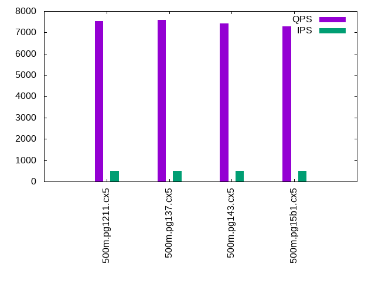

This is a report for the insert benchmark with 500M docs and 1 client(s). It is generated by scripts (bash, awk, sed) and Tufte might not be impressed. An overview of the insert benchmark is here and a short update is here. Below, by DBMS, I mean DBMS+version.config. An example is my8020.c10b40 where my means MySQL, 8020 is version 8.0.20 and c10b40 is the name for the configuration file.
The test server is an Intel NUC with 4 cores, 16G RAM and a Samsung 970 EVO. More details are here. Clients and the DBMS share one server. The per-database configs are in the per-database subdirectories here.
The tested DBMS are:
The numbers are inserts/s for l.i0 and l.i1, indexed docs (or rows) /s for l.x and queries/s for q*.2. The values are the average rate over the entire test for inserts (IPS) and queries (QPS). The range of values for IPS and QPS is split into 3 parts: bottom 25%, middle 50%, top 25%. Values in the bottom 25% have a red background, values in the top 25% have a green background and values in the middle have no color. A gray background is used for values that can be ignored because the DBMS did not sustain the target insert rate. Red backgrounds are not used when the minimum value is within 80% of the max value.
| dbms | l.i0 | l.x | l.i1 | q100.1 | q500.1 | q1000.1 |
|---|---|---|---|---|---|---|
| 500m.pg1211.cx5 | 102796 | 221283 | 2407 | 7540 | 7541 | 7440 |
| 500m.pg137.cx5 | 107296 | 241361 | 2379 | 7587 | 7574 | 7512 |
| 500m.pg143.cx5 | 100867 | 237239 | 2308 | 7465 | 7425 | 7342 |
| 500m.pg15b1.cx5 | 91929 | 234899 | 2344 | 7344 | 7289 | 7180 |
This lists the average rate of inserts/s for the tests that do inserts concurrent with queries. For such tests the query rate is listed in the table above. The read+write tests are setup so that the insert rate should match the target rate every second. Cells that are not at least 95% of the target have a red background to indicate a failure to satisfy the target.
| dbms | q100.1 | q500.1 | q1000.1 |
|---|---|---|---|
| pg1211.cx5 | 100 | 500 | 999 |
| pg137.cx5 | 100 | 500 | 999 |
| pg143.cx5 | 100 | 500 | 999 |
| pg15b1.cx5 | 100 | 499 | 999 |
| target | 100 | 500 | 1000 |
l.i0: load without secondary indexes. Graphs for performance per 1-second interval are here.
Average throughput:
Insert response time histogram: each cell has the percentage of responses that take <= the time in the header and max is the max response time in seconds. For the max column values in the top 25% of the range have a red background and in the bottom 25% of the range have a green background. The red background is not used when the min value is within 80% of the max value.
| dbms | 256us | 1ms | 4ms | 16ms | 64ms | 256ms | 1s | 4s | 16s | gt | max |
|---|---|---|---|---|---|---|---|---|---|---|---|
| pg1211.cx5 | 92.857 | 7.140 | 0.002 | 0.001 | nonzero | 0.146 | |||||
| pg137.cx5 | 96.923 | 3.073 | 0.003 | 0.001 | nonzero | 0.127 | |||||
| pg143.cx5 | 83.055 | 16.941 | 0.003 | 0.001 | nonzero | 0.239 | |||||
| pg15b1.cx5 | 1.142 | 98.852 | 0.005 | 0.001 | nonzero | nonzero | 0.432 |
Performance metrics for the DBMS listed above. Some are normalized by throughput, others are not. Legend for results is here.
ips qps rps rmbps wps wmbps rpq rkbpq wpi wkbpi csps cpups cspq cpupq dbgb1 dbgb2 rss maxop p50 p99 tag 102796 0 44 0.3 195.8 39.6 0.000 0.003 0.002 0.395 12269 42.1 0.119 16 47.8 55.8 0.0 0.146 102887 98592 500m.pg1211.cx5 107296 0 38 0.3 160.6 51.4 0.000 0.003 0.001 0.490 12894 43.5 0.120 16 47.8 62.9 0.0 0.127 107883 98795 500m.pg137.cx5 100867 0 37 0.4 139.1 46.5 0.000 0.004 0.001 0.472 12091 43.2 0.120 17 47.8 63.5 5.4 0.239 101289 95298 500m.pg143.cx5 91929 0 34 0.3 130.7 43.3 0.000 0.003 0.001 0.482 11057 42.5 0.120 18 47.8 63.4 0.0 0.432 92199 86408 500m.pg15b1.cx5
l.x: create secondary indexes.
Average throughput:
Performance metrics for the DBMS listed above. Some are normalized by throughput, others are not. Legend for results is here.
ips qps rps rmbps wps wmbps rpq rkbpq wpi wkbpi csps cpups cspq cpupq dbgb1 dbgb2 rss maxop p50 p99 tag 221283 0 570 69.2 473.0 102.2 0.003 0.320 0.002 0.473 918 22.7 0.004 4 91.9 111.5 0.0 0.003 NA NA 500m.pg1211.cx5 241361 0 591 73.5 198.0 77.1 0.002 0.312 0.001 0.327 522 23.1 0.002 4 91.9 106.1 0.0 0.006 NA NA 500m.pg137.cx5 237239 0 579 72.0 203.0 78.2 0.002 0.311 0.001 0.338 602 22.9 0.003 4 91.9 110.4 0.0 0.003 NA NA 500m.pg143.cx5 234899 0 648 80.4 214.0 83.6 0.003 0.351 0.001 0.365 572 22.8 0.002 4 91.9 107.5 0.0 0.003 NA NA 500m.pg15b1.cx5
l.i1: continue load after secondary indexes created. Graphs for performance per 1-second interval are here.
Average throughput:
Insert response time histogram: each cell has the percentage of responses that take <= the time in the header and max is the max response time in seconds. For the max column values in the top 25% of the range have a red background and in the bottom 25% of the range have a green background. The red background is not used when the min value is within 80% of the max value.
| dbms | 256us | 1ms | 4ms | 16ms | 64ms | 256ms | 1s | 4s | 16s | gt | max |
|---|---|---|---|---|---|---|---|---|---|---|---|
| pg1211.cx5 | 26.661 | 73.311 | 0.028 | 0.140 | |||||||
| pg137.cx5 | 24.784 | 75.091 | 0.124 | 0.155 | |||||||
| pg143.cx5 | 21.258 | 78.626 | 0.114 | 0.002 | 0.377 | ||||||
| pg15b1.cx5 | 20.479 | 79.454 | 0.066 | 0.002 | 0.305 |
Performance metrics for the DBMS listed above. Some are normalized by throughput, others are not. Legend for results is here.
ips qps rps rmbps wps wmbps rpq rkbpq wpi wkbpi csps cpups cspq cpupq dbgb1 dbgb2 rss maxop p50 p99 tag 2407 0 3219 25.8 4082.4 64.9 1.337 10.961 1.696 27.626 7457 22.0 3.098 366 93.6 110.4 0.0 0.140 2447 1598 500m.pg1211.cx5 2379 0 3212 25.7 4051.1 65.2 1.350 11.070 1.703 28.059 7539 22.0 3.169 370 93.6 110.4 0.0 0.155 2447 1548 500m.pg137.cx5 2308 0 3113 24.9 3947.4 64.9 1.349 11.057 1.710 28.794 7175 20.8 3.109 361 93.6 113.2 0.0 0.377 2347 1298 500m.pg143.cx5 2344 0 3168 25.4 4002.6 63.4 1.352 11.086 1.708 27.703 7234 20.3 3.087 346 93.6 112.4 0.0 0.305 2347 1298 500m.pg15b1.cx5
q100.1: range queries with 100 insert/s per client. Graphs for performance per 1-second interval are here.
Average throughput:
Query response time histogram: each cell has the percentage of responses that take <= the time in the header and max is the max response time in seconds. For max values in the top 25% of the range have a red background and in the bottom 25% of the range have a green background. The red background is not used when the min value is within 80% of the max value.
| dbms | 256us | 1ms | 4ms | 16ms | 64ms | 256ms | 1s | 4s | 16s | gt | max |
|---|---|---|---|---|---|---|---|---|---|---|---|
| pg1211.cx5 | 99.903 | 0.097 | 0.001 | nonzero | 0.015 | ||||||
| pg137.cx5 | 99.883 | 0.115 | 0.001 | nonzero | nonzero | 0.050 | |||||
| pg143.cx5 | 99.825 | 0.172 | 0.003 | nonzero | nonzero | 0.046 | |||||
| pg15b1.cx5 | 99.829 | 0.168 | 0.003 | nonzero | nonzero | 0.053 |
Insert response time histogram: each cell has the percentage of responses that take <= the time in the header and max is the max response time in seconds. For max values in the top 25% of the range have a red background and in the bottom 25% of the range have a green background. The red background is not used when the min value is within 80% of the max value.
| dbms | 256us | 1ms | 4ms | 16ms | 64ms | 256ms | 1s | 4s | 16s | gt | max |
|---|---|---|---|---|---|---|---|---|---|---|---|
| pg1211.cx5 | 85.146 | 14.854 | 0.033 | ||||||||
| pg137.cx5 | 85.708 | 14.285 | 0.007 | 0.255 | |||||||
| pg143.cx5 | 96.861 | 3.132 | 0.007 | 0.095 | |||||||
| pg15b1.cx5 | 96.507 | 3.486 | 0.007 | 0.230 |
Performance metrics for the DBMS listed above. Some are normalized by throughput, others are not. Legend for results is here.
ips qps rps rmbps wps wmbps rpq rkbpq wpi wkbpi csps cpups cspq cpupq dbgb1 dbgb2 rss maxop p50 p99 tag 100 7540 135 1.1 270.4 4.2 0.018 0.147 2.709 43.065 29332 27.7 3.890 147 93.7 96.1 0.0 0.015 7560 7080 500m.pg1211.cx5 100 7587 137 1.1 273.5 4.3 0.018 0.148 2.741 43.809 29522 27.7 3.891 146 93.7 96.1 0.0 0.050 7608 6952 500m.pg137.cx5 100 7465 137 1.1 335.7 4.8 0.018 0.151 3.360 48.811 28979 26.3 3.882 141 93.7 98.5 0.0 0.046 7496 6297 500m.pg143.cx5 100 7344 137 1.1 291.5 4.4 0.019 0.153 2.921 45.419 28491 26.2 3.879 143 93.7 99.3 0.0 0.053 7368 6473 500m.pg15b1.cx5
q500.1: range queries with 500 insert/s per client. Graphs for performance per 1-second interval are here.
Average throughput:
Query response time histogram: each cell has the percentage of responses that take <= the time in the header and max is the max response time in seconds. For max values in the top 25% of the range have a red background and in the bottom 25% of the range have a green background. The red background is not used when the min value is within 80% of the max value.
| dbms | 256us | 1ms | 4ms | 16ms | 64ms | 256ms | 1s | 4s | 16s | gt | max |
|---|---|---|---|---|---|---|---|---|---|---|---|
| pg1211.cx5 | 99.910 | 0.088 | 0.002 | nonzero | 0.005 | ||||||
| pg137.cx5 | 99.920 | 0.078 | 0.002 | nonzero | nonzero | 0.017 | |||||
| pg143.cx5 | 99.861 | 0.137 | 0.002 | nonzero | 0.005 | ||||||
| pg15b1.cx5 | 99.849 | 0.149 | 0.002 | nonzero | 0.005 |
Insert response time histogram: each cell has the percentage of responses that take <= the time in the header and max is the max response time in seconds. For max values in the top 25% of the range have a red background and in the bottom 25% of the range have a green background. The red background is not used when the min value is within 80% of the max value.
| dbms | 256us | 1ms | 4ms | 16ms | 64ms | 256ms | 1s | 4s | 16s | gt | max |
|---|---|---|---|---|---|---|---|---|---|---|---|
| pg1211.cx5 | 97.018 | 2.979 | 0.003 | 0.078 | |||||||
| pg137.cx5 | 96.667 | 3.326 | 0.007 | 0.075 | |||||||
| pg143.cx5 | 89.878 | 10.114 | 0.008 | 0.113 | |||||||
| pg15b1.cx5 | 92.101 | 7.893 | 0.006 | 0.076 |
Performance metrics for the DBMS listed above. Some are normalized by throughput, others are not. Legend for results is here.
ips qps rps rmbps wps wmbps rpq rkbpq wpi wkbpi csps cpups cspq cpupq dbgb1 dbgb2 rss maxop p50 p99 tag 500 7541 658 5.2 1056.0 18.4 0.087 0.708 2.114 37.763 30450 28.1 4.038 149 94.6 98.8 0.0 0.005 7544 7419 500m.pg1211.cx5 500 7574 658 5.2 1063.6 18.5 0.087 0.705 2.129 37.960 30588 28.3 4.039 149 94.6 98.8 0.0 0.017 7576 7448 500m.pg137.cx5 500 7425 658 5.2 1018.5 17.8 0.089 0.721 2.039 36.461 29974 27.4 4.037 148 94.6 99.7 0.0 0.005 7432 7272 500m.pg143.cx5 499 7289 658 5.2 1018.5 17.8 0.090 0.734 2.039 36.494 29431 27.3 4.038 150 94.6 99.7 0.0 0.005 7288 7176 500m.pg15b1.cx5
q1000.1: range queries with 1000 insert/s per client. Graphs for performance per 1-second interval are here.
Average throughput:
Query response time histogram: each cell has the percentage of responses that take <= the time in the header and max is the max response time in seconds. For max values in the top 25% of the range have a red background and in the bottom 25% of the range have a green background. The red background is not used when the min value is within 80% of the max value.
| dbms | 256us | 1ms | 4ms | 16ms | 64ms | 256ms | 1s | 4s | 16s | gt | max |
|---|---|---|---|---|---|---|---|---|---|---|---|
| pg1211.cx5 | 99.830 | 0.167 | 0.003 | nonzero | 0.014 | ||||||
| pg137.cx5 | 99.844 | 0.153 | 0.003 | nonzero | nonzero | 0.017 | |||||
| pg143.cx5 | 99.716 | 0.281 | 0.003 | nonzero | 0.007 | ||||||
| pg15b1.cx5 | 99.674 | 0.323 | 0.003 | nonzero | 0.006 |
Insert response time histogram: each cell has the percentage of responses that take <= the time in the header and max is the max response time in seconds. For max values in the top 25% of the range have a red background and in the bottom 25% of the range have a green background. The red background is not used when the min value is within 80% of the max value.
| dbms | 256us | 1ms | 4ms | 16ms | 64ms | 256ms | 1s | 4s | 16s | gt | max |
|---|---|---|---|---|---|---|---|---|---|---|---|
| pg1211.cx5 | 93.183 | 6.811 | 0.006 | 0.097 | |||||||
| pg137.cx5 | 91.966 | 8.026 | 0.008 | 0.092 | |||||||
| pg143.cx5 | 83.035 | 16.935 | 0.027 | 0.003 | 0.513 | ||||||
| pg15b1.cx5 | 84.762 | 15.217 | 0.021 | 0.001 | 0.293 |
Performance metrics for the DBMS listed above. Some are normalized by throughput, others are not. Legend for results is here.
ips qps rps rmbps wps wmbps rpq rkbpq wpi wkbpi csps cpups cspq cpupq dbgb1 dbgb2 rss maxop p50 p99 tag 999 7440 1292 10.3 1696.0 32.3 0.174 1.418 1.698 33.143 31464 29.1 4.229 156 95.5 102.8 0.0 0.014 7448 7288 500m.pg1211.cx5 999 7512 1294 10.3 1691.4 32.3 0.172 1.406 1.693 33.072 31756 29.2 4.228 155 95.5 102.8 0.0 0.017 7512 7352 500m.pg137.cx5 999 7342 1294 10.3 1736.7 31.6 0.176 1.443 1.738 32.419 31068 28.5 4.232 155 95.5 104.5 0.0 0.007 7352 7176 500m.pg143.cx5 999 7180 1294 10.3 1727.9 31.5 0.180 1.475 1.729 32.332 30411 28.3 4.236 158 95.5 104.5 0.0 0.006 7179 7048 500m.pg15b1.cx5
l.i0: load without secondary indexes
Performance metrics for all DBMS, not just the ones listed above. Some are normalized by throughput, others are not. Legend for results is here.
ips qps rps rmbps wps wmbps rpq rkbpq wpi wkbpi csps cpups cspq cpupq dbgb1 dbgb2 rss maxop p50 p99 tag 102796 0 44 0.3 195.8 39.6 0.000 0.003 0.002 0.395 12269 42.1 0.119 16 47.8 55.8 0.0 0.146 102887 98592 500m.pg1211.cx5 107296 0 38 0.3 160.6 51.4 0.000 0.003 0.001 0.490 12894 43.5 0.120 16 47.8 62.9 0.0 0.127 107883 98795 500m.pg137.cx5 100867 0 37 0.4 139.1 46.5 0.000 0.004 0.001 0.472 12091 43.2 0.120 17 47.8 63.5 5.4 0.239 101289 95298 500m.pg143.cx5 91929 0 34 0.3 130.7 43.3 0.000 0.003 0.001 0.482 11057 42.5 0.120 18 47.8 63.4 0.0 0.432 92199 86408 500m.pg15b1.cx5
l.x: create secondary indexes
Performance metrics for all DBMS, not just the ones listed above. Some are normalized by throughput, others are not. Legend for results is here.
ips qps rps rmbps wps wmbps rpq rkbpq wpi wkbpi csps cpups cspq cpupq dbgb1 dbgb2 rss maxop p50 p99 tag 221283 0 570 69.2 473.0 102.2 0.003 0.320 0.002 0.473 918 22.7 0.004 4 91.9 111.5 0.0 0.003 NA NA 500m.pg1211.cx5 241361 0 591 73.5 198.0 77.1 0.002 0.312 0.001 0.327 522 23.1 0.002 4 91.9 106.1 0.0 0.006 NA NA 500m.pg137.cx5 237239 0 579 72.0 203.0 78.2 0.002 0.311 0.001 0.338 602 22.9 0.003 4 91.9 110.4 0.0 0.003 NA NA 500m.pg143.cx5 234899 0 648 80.4 214.0 83.6 0.003 0.351 0.001 0.365 572 22.8 0.002 4 91.9 107.5 0.0 0.003 NA NA 500m.pg15b1.cx5
l.i1: continue load after secondary indexes created
Performance metrics for all DBMS, not just the ones listed above. Some are normalized by throughput, others are not. Legend for results is here.
ips qps rps rmbps wps wmbps rpq rkbpq wpi wkbpi csps cpups cspq cpupq dbgb1 dbgb2 rss maxop p50 p99 tag 2407 0 3219 25.8 4082.4 64.9 1.337 10.961 1.696 27.626 7457 22.0 3.098 366 93.6 110.4 0.0 0.140 2447 1598 500m.pg1211.cx5 2379 0 3212 25.7 4051.1 65.2 1.350 11.070 1.703 28.059 7539 22.0 3.169 370 93.6 110.4 0.0 0.155 2447 1548 500m.pg137.cx5 2308 0 3113 24.9 3947.4 64.9 1.349 11.057 1.710 28.794 7175 20.8 3.109 361 93.6 113.2 0.0 0.377 2347 1298 500m.pg143.cx5 2344 0 3168 25.4 4002.6 63.4 1.352 11.086 1.708 27.703 7234 20.3 3.087 346 93.6 112.4 0.0 0.305 2347 1298 500m.pg15b1.cx5
q100.1: range queries with 100 insert/s per client
Performance metrics for all DBMS, not just the ones listed above. Some are normalized by throughput, others are not. Legend for results is here.
ips qps rps rmbps wps wmbps rpq rkbpq wpi wkbpi csps cpups cspq cpupq dbgb1 dbgb2 rss maxop p50 p99 tag 100 7540 135 1.1 270.4 4.2 0.018 0.147 2.709 43.065 29332 27.7 3.890 147 93.7 96.1 0.0 0.015 7560 7080 500m.pg1211.cx5 100 7587 137 1.1 273.5 4.3 0.018 0.148 2.741 43.809 29522 27.7 3.891 146 93.7 96.1 0.0 0.050 7608 6952 500m.pg137.cx5 100 7465 137 1.1 335.7 4.8 0.018 0.151 3.360 48.811 28979 26.3 3.882 141 93.7 98.5 0.0 0.046 7496 6297 500m.pg143.cx5 100 7344 137 1.1 291.5 4.4 0.019 0.153 2.921 45.419 28491 26.2 3.879 143 93.7 99.3 0.0 0.053 7368 6473 500m.pg15b1.cx5
q500.1: range queries with 500 insert/s per client
Performance metrics for all DBMS, not just the ones listed above. Some are normalized by throughput, others are not. Legend for results is here.
ips qps rps rmbps wps wmbps rpq rkbpq wpi wkbpi csps cpups cspq cpupq dbgb1 dbgb2 rss maxop p50 p99 tag 500 7541 658 5.2 1056.0 18.4 0.087 0.708 2.114 37.763 30450 28.1 4.038 149 94.6 98.8 0.0 0.005 7544 7419 500m.pg1211.cx5 500 7574 658 5.2 1063.6 18.5 0.087 0.705 2.129 37.960 30588 28.3 4.039 149 94.6 98.8 0.0 0.017 7576 7448 500m.pg137.cx5 500 7425 658 5.2 1018.5 17.8 0.089 0.721 2.039 36.461 29974 27.4 4.037 148 94.6 99.7 0.0 0.005 7432 7272 500m.pg143.cx5 499 7289 658 5.2 1018.5 17.8 0.090 0.734 2.039 36.494 29431 27.3 4.038 150 94.6 99.7 0.0 0.005 7288 7176 500m.pg15b1.cx5
q1000.1: range queries with 1000 insert/s per client
Performance metrics for all DBMS, not just the ones listed above. Some are normalized by throughput, others are not. Legend for results is here.
ips qps rps rmbps wps wmbps rpq rkbpq wpi wkbpi csps cpups cspq cpupq dbgb1 dbgb2 rss maxop p50 p99 tag 999 7440 1292 10.3 1696.0 32.3 0.174 1.418 1.698 33.143 31464 29.1 4.229 156 95.5 102.8 0.0 0.014 7448 7288 500m.pg1211.cx5 999 7512 1294 10.3 1691.4 32.3 0.172 1.406 1.693 33.072 31756 29.2 4.228 155 95.5 102.8 0.0 0.017 7512 7352 500m.pg137.cx5 999 7342 1294 10.3 1736.7 31.6 0.176 1.443 1.738 32.419 31068 28.5 4.232 155 95.5 104.5 0.0 0.007 7352 7176 500m.pg143.cx5 999 7180 1294 10.3 1727.9 31.5 0.180 1.475 1.729 32.332 30411 28.3 4.236 158 95.5 104.5 0.0 0.006 7179 7048 500m.pg15b1.cx5
Insert response time histogram
256us 1ms 4ms 16ms 64ms 256ms 1s 4s 16s gt max tag 0.000 92.857 7.140 0.002 0.001 nonzero 0.000 0.000 0.000 0.000 0.146 pg1211.cx5 0.000 96.923 3.073 0.003 0.001 nonzero 0.000 0.000 0.000 0.000 0.127 pg137.cx5 0.000 83.055 16.941 0.003 0.001 nonzero 0.000 0.000 0.000 0.000 0.239 pg143.cx5 0.000 1.142 98.852 0.005 0.001 nonzero nonzero 0.000 0.000 0.000 0.432 pg15b1.cx5
TODO - determine whether there is data for create index response time
Insert response time histogram
256us 1ms 4ms 16ms 64ms 256ms 1s 4s 16s gt max tag 0.000 0.000 0.000 26.661 73.311 0.028 0.000 0.000 0.000 0.000 0.140 pg1211.cx5 0.000 0.000 0.000 24.784 75.091 0.124 0.000 0.000 0.000 0.000 0.155 pg137.cx5 0.000 0.000 0.000 21.258 78.626 0.114 0.002 0.000 0.000 0.000 0.377 pg143.cx5 0.000 0.000 0.000 20.479 79.454 0.066 0.002 0.000 0.000 0.000 0.305 pg15b1.cx5
Query response time histogram
256us 1ms 4ms 16ms 64ms 256ms 1s 4s 16s gt max tag 99.903 0.097 0.001 nonzero 0.000 0.000 0.000 0.000 0.000 0.000 0.015 pg1211.cx5 99.883 0.115 0.001 nonzero nonzero 0.000 0.000 0.000 0.000 0.000 0.050 pg137.cx5 99.825 0.172 0.003 nonzero nonzero 0.000 0.000 0.000 0.000 0.000 0.046 pg143.cx5 99.829 0.168 0.003 nonzero nonzero 0.000 0.000 0.000 0.000 0.000 0.053 pg15b1.cx5
Insert response time histogram
256us 1ms 4ms 16ms 64ms 256ms 1s 4s 16s gt max tag 0.000 0.000 0.000 85.146 14.854 0.000 0.000 0.000 0.000 0.000 0.033 pg1211.cx5 0.000 0.000 0.000 85.708 14.285 0.007 0.000 0.000 0.000 0.000 0.255 pg137.cx5 0.000 0.000 0.000 96.861 3.132 0.007 0.000 0.000 0.000 0.000 0.095 pg143.cx5 0.000 0.000 0.000 96.507 3.486 0.007 0.000 0.000 0.000 0.000 0.230 pg15b1.cx5
Query response time histogram
256us 1ms 4ms 16ms 64ms 256ms 1s 4s 16s gt max tag 99.910 0.088 0.002 nonzero 0.000 0.000 0.000 0.000 0.000 0.000 0.005 pg1211.cx5 99.920 0.078 0.002 nonzero nonzero 0.000 0.000 0.000 0.000 0.000 0.017 pg137.cx5 99.861 0.137 0.002 nonzero 0.000 0.000 0.000 0.000 0.000 0.000 0.005 pg143.cx5 99.849 0.149 0.002 nonzero 0.000 0.000 0.000 0.000 0.000 0.000 0.005 pg15b1.cx5
Insert response time histogram
256us 1ms 4ms 16ms 64ms 256ms 1s 4s 16s gt max tag 0.000 0.000 0.000 97.018 2.979 0.003 0.000 0.000 0.000 0.000 0.078 pg1211.cx5 0.000 0.000 0.000 96.667 3.326 0.007 0.000 0.000 0.000 0.000 0.075 pg137.cx5 0.000 0.000 0.000 89.878 10.114 0.008 0.000 0.000 0.000 0.000 0.113 pg143.cx5 0.000 0.000 0.000 92.101 7.893 0.006 0.000 0.000 0.000 0.000 0.076 pg15b1.cx5
Query response time histogram
256us 1ms 4ms 16ms 64ms 256ms 1s 4s 16s gt max tag 99.830 0.167 0.003 nonzero 0.000 0.000 0.000 0.000 0.000 0.000 0.014 pg1211.cx5 99.844 0.153 0.003 nonzero nonzero 0.000 0.000 0.000 0.000 0.000 0.017 pg137.cx5 99.716 0.281 0.003 nonzero 0.000 0.000 0.000 0.000 0.000 0.000 0.007 pg143.cx5 99.674 0.323 0.003 nonzero 0.000 0.000 0.000 0.000 0.000 0.000 0.006 pg15b1.cx5
Insert response time histogram
256us 1ms 4ms 16ms 64ms 256ms 1s 4s 16s gt max tag 0.000 0.000 0.000 93.183 6.811 0.006 0.000 0.000 0.000 0.000 0.097 pg1211.cx5 0.000 0.000 0.000 91.966 8.026 0.008 0.000 0.000 0.000 0.000 0.092 pg137.cx5 0.000 0.000 0.000 83.035 16.935 0.027 0.003 0.000 0.000 0.000 0.513 pg143.cx5 0.000 0.000 0.000 84.762 15.217 0.021 0.001 0.000 0.000 0.000 0.293 pg15b1.cx5